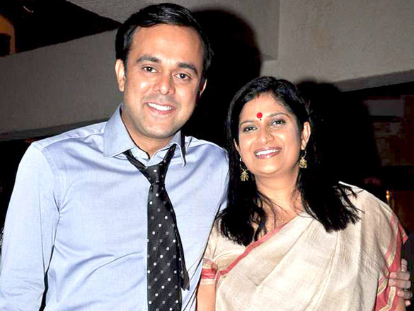

🔥 Trending News
🎤 Actress Chinmayee Sumeet Slams MP’s Marathi Remarks
Image: Chinmayee Surve & Sumeet Raghavan (CC BY‑3.0 via Wikimedia Commons)
Maharashtra actress Chinmayee Sumeet rebuked BJP MP Nishikant Dubey’s alleged anti-Marathi comments, stating, “Living here, making a living but not valuing Marathi — that’s not right.”
Image: MNS leader Avinash Jadhav detained before rally (via FPJ Shorts)
👮 MNS Leader Detained Before Marathi Rally
Avinash Jadhav was taken into custody early morning before a protest in Mira Bhayandar, triggered over language issues.
Image: MNS workers gather in large numbers at the Mira Bhayander rally (StockTwits / PTI)
📣 MNS Protest in Mira Bhayandar; Minister Heckled
Thousands of MNS workers gathered to clash with traders’ protest. Transport Minister Pratap Sarnaik was heckled and forced to leave when he tried to address the crowd.
Image: Large crowd at MNS rally over language row (Deccan Herald/PTI)
🚧 Large Crowd at MNS Rally in Mumbai
Shiv Sena’s local minister criticized police for blocking the rally, calling the action unnecessary. The rally highlighted tensions stemming from earlier food stall assault over language usage.
Image: Avinash Jadhav detained before rally in Mira Bhayandar (Big News Network)
👮 MNS Leader Avinash Jadhav Detained Before Marathi Rally
The Maharashtra Navnirman Sena’s Thane-Palghar chief Avinash Jadhav was detained by police early morning in Mira Bhayandar before his planned counter-protest over trader disputes tied to the language row.